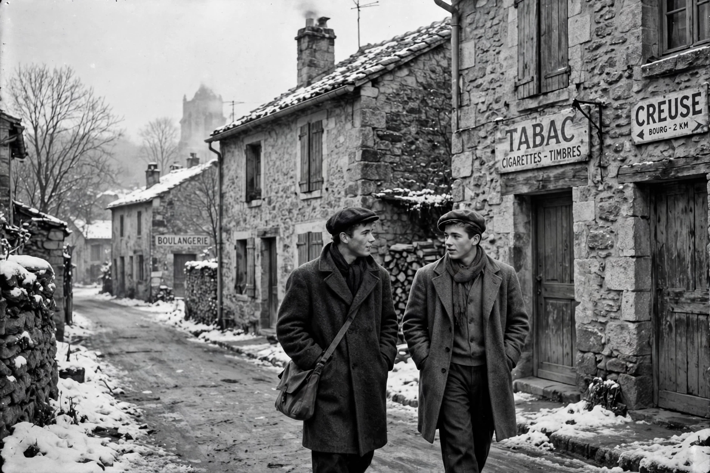

| Le Beau Serge | |
|---|---|
 Shot on location in Sardent, Chabrol's childhood village | |
| Directed by | Claude Chabrol |
| Written by | Claude Chabrol |
| Starring | Gérard Blain, Jean-Claude Brialy, Bernadette Lafont |
| Release date | 1958 (Locarno); 1959 (France) |
| Running time | 99 minutes |
| Country / Language | France / French |
Le Beau Serge (French pronunciation: [lə bo sɛʁʒ], "Handsome Serge") is a 1958 French drama film directed by Claude Chabrol, often considered the first feature film of the French New Wave. It stars Gérard Blain and Jean-Claude Brialy and was shot in Sardent, the village in the Creuse where Chabrol spent part of his childhood.
François (Brialy), recovering from illness, returns to his childhood village after ten years in Paris. He finds his old friend Serge (Blain) sunk into alcoholism and despair after the death of his child and trapped in a bitter marriage. François becomes determined to redeem Serge, at growing cost to himself, in a drama of friendship, faith, and sacrifice that ends with Serge's redemption through the birth of a healthy child and François's collapse — a transfer of vitality between the two men.
Chabrol financed the film with an inheritance received by his first wife, Agnès, and produced it through his company AJYM Films. The film won the Prix Jean Vigo and the Best Director prize at the Locarno Festival, announcing the arrival of the young Cahiers du Cinéma critics as filmmakers and helping to launch the New Wave alongside Chabrol's own Les Cousins (1959) and Truffaut's The 400 Blows.